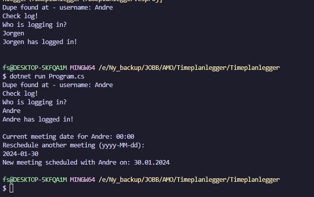
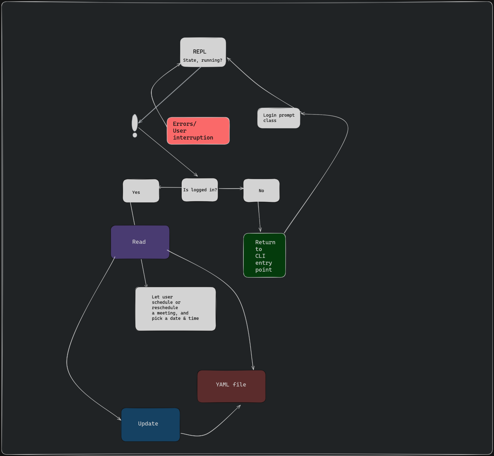

Todo
Timeplanlegger CLI
Owner: https://github.com/ayramatao
Contributor: https://github.com/JorgenMJobloop
License: GNU General Public License 3.0 - https://www.gnu.org/licenses/gpl-3.0.html
Implemented
Logging in with a YAML database file, that is handled by the I/O flow logic.

- Login w/ YAML DB File.
- Rescheduling meetings.
To be implemented
- A while-true loop that runs when the CLI is interactive.
- Further error handling, in cases of L1.
- Let users log in and log out in a REPL mode.
- After picking a date, choose a meeting start time within a range of 1 to 2 hours.
- Color coding the different Command Line arguments, for example: Red for logs and errors, blue or green for user input(?).
- When the CLI is finished. Port it to a Blazor Fullstack WebApp with a SQL Database.
To be implemented Git
- .gitignore file
- Set a version for the public GPL 3.0 release
- Plot database schema (YAML, Microsoft SQL(MsQL))
L1
- Unexpected behavior in .exe file (crashes etc.)
- User error.
- Controlled user exit method (ctrl + C/ ctrl + D/ Alt + F4 etc.)
- System errors (program freezing unexpectedly.)
If we are able to:
- Blazor WebApp port of the Meeting scheduler
- Create UI/UX in Figma
- Implement UI and UX
- Host on Vercel/Netlify/Azure etc.
Program flowchart

Resources & Documentation
https://medium.com/@diyaz.yakubov/how-to-run-c-code-in-a-browser-15d2c0c8bed3
https://www.reddit.com/r/csharp/comments/jz7eoy/c_compiler_in_the_browser/
https://stackoverflow.com/questions/57837190/how-does-one-run-code-within-the-browser-at-run-time
Link to flowchart
https://excalidraw.com/#json=mM5OkJqBV5rVtEZWA-Lkp,fVTBBauYQYm83gCQwLwFFA
Link to Github accounts, see title of document.